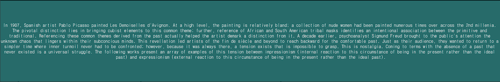
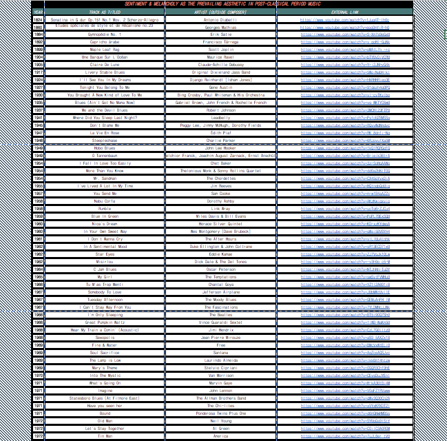

øøøøøøøøøøøøø
no special taste blog
øøøøøøøøøøøøø
artists, collectives . .
ibrahim el salahi (afro cubism)
Marcel Duchamp (dada)
Tristan Tzara (dada, surrealism)
James Johnson Sweeney (former director of Guggenheim)
David Hockney (contemporary bright)
Jean Michel Basquiat (abstract expressionism, hyper contemporary)
SAMO (street art)
Andy Warhol (pop art)
Marc Chagall (impressionist, expressionist)
Michael Macquire (architectural abstract)
Michelle Peterson Albandos (architectural abstract, 3d)
Kazimir Malevich (minimal bright cubism)
Sun Xun (Japanese hyper contemporary)
Djuno Tomsni (collage)
Charles Loloma (Indian jewelry maker)
Yamaguchi Gen (Japanese abstract art)
Maki Haku (Japanese abstract art)
Jesse monongya (indian jewelry maker)
Joe Roberts (trippy psychonaut)
david hockney (bright)
cy twombly (minimalist)
carrie moyer (bright) ***
chris lawson (minimalist)
mariano chavez (bright)
victor hugo Perez (bright)
zuleika dobson (minimalist)
emily carr (landscape)
stevie smith (minimalist)
michelle miller (minimalist)
shomei tomatsu (bw photo)
kikuji kawada (minimalist)
koji enokura (minimalist)
eiki hosoe (bw photo)
hitome watanabe (bw photo)
seiichi motohashi (bw photo)
jiro takamatsu (minimalist structural)
nobuyoshi araki (nude shock photo) ***
takuma nakahira (bw photo)
chaim soutine (impressionism)
frantisek kupka (bright abstract)
paul klee (future cubism)
jean metzinger (cubism figure)
juan gris (cubism)
lucy mckenzie (collage)
sadamanza motonaga (bright abstract)
hundertwasser (expressionist landscape)
dale kiniff (bright figure)
mark banks (expressionist minimalism)
Paul t mcarthy (nihilistic sculpture and expressionism)
fela kuti (African collage) ***
michi susan (bright asian influence)
joel peck (minimalism)
barloga (minimalism)
Thich Nhat Han (minimalism)
andrew holmquist (contemporary cubism)
enrico baj (indie band album cover-esque) ***
hollis sigler (bright)
jose luis cuevas (figure collage)
david choe (street art)
Yoskay Yamamato (digital collage)
Aya Takano (digital manga style)
nazafarin lotfi (minimalist wood)
maryam hoseini (Hockney-esque)
pat kroth (abstract vibe)
julie sutter blair (dark landscape)
guiteau lanoue (cubist collage)
feng biddle (lofi cubism)
hiro yamagata (bright digital world building)
joyce pensato (minimalist dark cultural references)
robert melee (bright figure)
Brian madonna (minimalist figure, REACH OUT)
mikey hester (minimalist)
helen frankenthaler (bright minimalist)
beth hoekel (space collage) ***
sondra perry (virtual reality art)
esau mcghee (collage)
ben stevens (masculine Japanese kawaii cute internet style)
mr. walters nerfect ((adult swim cartoon style)
bwana spoons (adult swim cartoon style)
myong kurily (adult swim cartoon style)
jermaine rogers (adult swim cartoon style)
salvador campos (hyper-contemporary minimalist vibe)
øøøøøøøøøøøøø
museums, galleries . .
kunsthistorisches museum wien (vienna)
museum of applied arts (vienna)
kunstalle wien museumsquartier (vienna)
belvedere 21 (vienna)
mumok (vienna)
bank austria kunstforum wien (vienna)
wien museum MUSA (vienna)
dom museum wien (vienna)
secession (vienna)
phantastenmuseum wien (vienna)
museum of art fakes (vienna)
hofjagd-und rustkammer (vienna)
vienna art connection (vienna)
austrian gallery belvedere (vienna)
gallery cafe (chicago)
taylor art collection (denver)
leigh gallery (chicago)
LARA Chicago (chicago)
flat iron building galleries (chicago)
the david leonardis galleries (chicago)
heaven art gallery (chicago)
las manos gallery (chicago)
museum of contemporary art (chicago)
noyes cultural center (evanston)
groshek gallery (chicago)
art institute chicago (chicago)
martha mae (chicago)
mars gallery (chicago)
vertical gallery (chicago)
rhona hoffman gallery (chicago)
intuit gallery (chicago)
Richard Gray gallery (chicago)
zolla lieberman gallery (chicago)
corbett vs. dempsey (chicago)
monique meloche (chicago)
aspect ratio (chicago)
kavi gupta (chicago)
the renaissance society (chicago)
chicago cultural center (chicago)
the poetry foundation (chicago)
espana boutique (chicago)
chicago art source gallery (chicago)
life force arts center (chicago)
block museum of arts (evanston)
Digital Arts Demo Space (chicago)
prospectus art gallery (chicago)
la luz gallery (chicago)
chicago art department (chicago)
plus gallery chicago (chicago)
colby gallery (chicago)
margin art gallery and collective (chicago)
AMFM (chicago)
Antena (chicago)
Pilsen Outpost (chicago)
Carlos and Dominguez (chicago)
NYCH gallery (chicago)
URI-eichen gallery (chicago)
Vault Gallery (chicago)
Woman Made Gallery (chicago)
prospectus art gallery (chicago)
rogers park art gallery (chicago)
greenleaf art center (chicago)
wondr museum (chicago)
LUMA (chicago)
Swedish American Museum (chicago)
National Museum of Mexican Art (chicago)
Glessner House Museum (chicago)
dusable museum of african american art (chicago)
smart museum of art (chicago)
museum of contemporary photography (chicago)
Design Museum of chicago (chicago)
Richard Driehaus Museum (chicago)
Oriental Institute Museum (chicago)
Hyde park ARt center (chicago)
American Writer’s Museum (chicago)
Depaul Art Museum (chicago)
LILLSTREET arts center (chicago)
Clarke house museum (chicago)
national veterans art museum (chicago)
modern wing (chicago)
stony island arts bank (chicago)
terra foundation (chicago)
ukrainian national museum (chicago)
heritage museum of asian art (chicago)
regards gallery (chicago)
second story studios (chicago)
frank loyd wright unitarian church (oak park)
wadell trading company (phoenix)
gravitart (nairobi)
sotheby’s (new york city)
christies (new york city)
guggenheim (new york city)
museum of modern art (new york city)
sharjah art museum (dubai)
metropolitan museum of art (new york city)
whitney museum of art (new york city)
the met breuer (new york city)
the new museum (new york city)
frick collection (new york city)
the jewish museum (new york city)
la sagrada familia (barcelona)
museu nacional d’Art de catalunya (barcelona)
barcelona museum of contemporary art (barcelona)
picasso museum (barcelona)
can framis museum (barcelona)
european museum of modern art (barcelona)
the dali museum (st. petersburg)
museum of arts and design (new york city)
rubin museum of art (new york city)
the studio museum in harlem (new york city)
american folk art museum (new york city)
queens museum (new york city)
the met cloisters (new york city)
neue galerie (new york city)
dahesh museum of art (new york city)
leslie lohman museum of lg art (new york city)
jacques marchais museum of tibetan art (new york city)
øøøøøøøøøøøøø
bands, personnel . .
Long beard (moths)
Spectrum (go to sleep 1994)
C-Clamp (Passing)
Tristan Tzara the band (discography)
dorothy ashby (nabu corfa)
Syl Johnson (is it because I’m black)
The New Birth (Honeybee)
Nicknames (lowball 10”)
suis la lune (heir 10”)
the promise ring (e. texas ave)
texas is the reason (blue boy)
braid (i’m afraid of everything 7”)
cap’n jazz (we are scientists 7”)
hunter complex (clown prince of the menthol trailer ep)
candy claws (ceres & calypso in the deep time)
hop along (sister cities, shaking through)
quarter mile thunder (down the drain)
mom jeans (best buds)
slowdive (pygmalion)
Palm (i don’t want to know)
camping in alaska (please be nice full)
midwest pen pals (inside jokes ep)
the brave little abacus (masked dancers)
bonjr (its ok, you’re ok)
lonely broken radio (bigger miracles)
gregor (the actress)
days in december (sweater weather)
ache hour credo (strangled planet)
the germs (lexicon devil)
bells on trike (5 7 5 2)
bill black’s combo (white silver sands)
the arcade fire (wake up)
tipping canoe (maytag existence)
dear heart (joanie sommers)
chet baker (i fall in love, it could happen to you)
ernie (Bragg Towers)
Julie London (the thrill is gone)
New Edition (Boys to Men)
Pentangle (Hunting Song)
Sanchiko Kanenobu (Misora beautiful sky)
Lee Moses (bad girl)
Christone Kingfish Ingram)
Earth, wind and fire (love’s holiday)
the staves (icarus)
yussef kamaal (black focus)
alex g (pretend)
meg & dia (monster)
khruangbin (como te quiero)
eddie jefferson (i got the blues)
Tyler Glenn (chapter 13)
hope tala (blue)
jay som (ghost)
samurai champloo (shiki no uta)
alfa mist (antiphon)
Zeta (Inverno)
Andres Segovia (leyenda by albeniz)
j dilla (562 instrumental)
the moments (love on a two way street)
Michael Prophet (let not your heart be troubled)
Sade (no ordinary love)
1994! (THank you arms and fingers)
of montreal (dirty dustin hoffman needs a bath)
Ashley Monroe (Jubilee)
Remo Drive (yer killin me)
Les Paul (Whispering 1951)
Kuu (Q ep)
SFP (my love is the shhh)
Jaheim (anything)
Injected (i iv v)
Usher (You make me wanna, say what you want)
Ithaca (Game for all who know)
ntourage (rmx.8)
Loren mazzacane connors (airs)
Still corners (the trip)
Bermuda triangle (suzanne)
Ahmad Jamal (One)
Forest (Full circle 1970)
vashti bunyan (heartleap)
Werner pirchner harry pepl jack de johnette (ecm lp)
Tom Rogerson Brian Eno (finding shore)
Satoshi Ashikawa (still way)
Terry Riley (happy ending)
William basinski (cascade)
Dizzy Gillespie stan gets ( i let a song go out of my heart)
Hiroshi yoshimura (green)
borealism (twilight tea)
Diabelli (Sonatina in G Op. 151 Scherzo: Allegro)
animals as leaders (apeirophobia)
color chromatic (that’s just so joseph mccarthy)
jackson browne (these days)
alice coltrane (turiya and ramakrishna)
Joe pass (teri)
marian mcpartland (i could write a book)
Duke ellington (mood indigo)
Madeline (perfect shapes)
The Beths (future me hates me)
ethers (rip off)
david ruffin (walk away from love)
paul brady (arthur mcbride)
gregory and the hawk (moenie and kitchi)
hyakkei (okurimono)
sampha (indecision, happens)
ativan corea (0001)
stlndrms (like, good)
vanilla (summer)
tyler the creator (911, mr lonely)
steve lacy (dark red, ryd)
sticky fingers (cyclone)
jim jones (we fly high ballin)
hey rosetta (there’s an arc)
Gerry and the (don’t let the sun catch you crying)
jizue (shiori)
Roy futureman wooten (bella and the fleck tones)
donny well pleased (open the gates bobby boy)
pharoah sanders (harvest time)
alan watts (vegetable root discourse)
thelonious monk (moving out w sonny rollins, misterioso, dont blame me)
swum (2002)
kevin krauter (fantasy theme)
SPORT (charles lindbergh)
Colour (tired eyes)
castevet (summer fences)
Only airplanes count (st 7”)
nouns (still bummed)
DJ Shadow (endtroducing)
boy problems (i swallowed a bug)
street smart cyclist (7” 2006)
algernon caldwallader (demo 7”)
dikembe (chicago bowls)
the band alaska (Hashish Christo)
king gizzard and the lizard wizards (the river)
my morning jacket (mahgeetah)
2ne1 ("It Hurts" (아파))
balkans (edita v, troubled in mind)
starfucker (german love, rawnald gregory erickson ii)
nohidea (haiku)
trapkingkai (???)
masato kumoi (mountain roads i, overture)
big words (the answer)
lamp (ゆめ 2014)
boyscott (goosebumps, blonde blood))
james nee (horns, reach)
foglake (rattlesnake)
magic ian (ego, maximum pelt)
real friends (home for fall acoustic)
zakk wylde (dead as yesterday)
vince guaraldi trio (happiness is, baseball theme, ossobucco)
totorro (home alone 12”)
surfer blood (floating vibes, slow jabroni)
the sound of animals fighting (the heraldic beak of the manufacturers medallion, the heretic)
sonny rollins (moving out 5-track)
saosin (seven years)
ryo fukui (scenery 12”)
lower definition (pueblo cicada)
woody shaw (diane)
we are trees (sunrise sunset, you)
trippie redd (1400/999 freestyle)
sylvia (didn’t I, pillow talk)
stevie ray vaughan (riviera paradise)
stevie wonder (close to you x never can say goodbye live 1972)
case (livin it up)
ja rule (livin it up)
horace silver (silver’s seranade)
steve stone huff (cookie)
steve moakler (favorite pair of eyes)
grannie (st 12”)
goldspot (rewind)
fall of troy (mouths like sidewinder missiles)
eric nakassa (floating docks)
elvis costello & the attractions (alison)
ella fitzgerald (all too soon)
elaine. (track 01 kapuchen)
stelvio cipriani (mary’s theme)
dashboard confessional (hands down)
dante elephante (pop song)
the staves (???)
so inagawa (selfless state, elsewhere)
seaside audio (anchors)
scrapper blackwell (nobody knows you when you’re down and out)
rubba (way star)
robert johnson (me and the devil blues)
the problematic (nothing ever works)
the planet you (posilutely)
los ilusionistas (colegiala)
local natives (wooly mammoth)
lily allen (smile, ldn)
zaytoven (say what you want, problems)
like lions (cheap seats)
lightnin’ hopkins (buddy brown’s blues)
lata mangeshkar (rasme ulfat ko nibhaaen…, zara si aahat hoti hai)
junichi masuda (cerulean city, cianwood city)
john pizzarelli (the way you look tonight)
john cameron (liquid sunshine)
jeremy passion (lemonade)
jeff buckley (grace)
jake bugg (seen it all_
pinegrove (everything so far)
t.l barnett (father i stretch my hands to thee)
passenger (underwater bride)
natalia lafourcade (soledad y el mar)
nas (2nd childhood)
milo (oneweek HAWTNGGA)
mf doom (rhymes like dimes)
mic geronimo (masta ic)
matisyahu (we will walk)
matt muse (getting to it)
feedmejack (knight fork, definitely you)
the dodos (fools)
golden suns (bonneville)
choker (el dorado)
balue (man in the sixties)
furnsss (st 2017)
shamana (fresh clean smooth fly)
bsd.u (fresh clean smooth fly)
your old droog (litt 15)
another michael (hanging)
Robert glasper experiment (move love)
kaytranada (move love edit)
Ghost Town DJ’s (My Boo 1996)
Sunshine Anderson (heard it all before)
dance gavin dance (it’s safe to say you dig the backseat, 12 hours 630 miles)
damu the fudgemunk (they who flock)
damien rice (cannonball, rootless tree)
closer 2 closure (you saved me under a cascade of stars)
city and colour (waiting seravaille)
Joe (table for two 2000)
KP (Swing my way)
ciara (body party)
chick corea (tokyo blue note 1992)
cherish (do it to it)
charlie parker (steeplechase, quasimodo, nights in tunisia (w miles davis))
caroline smith and the good night sleeps (;;;)
cady groves (one in the same)
bob marley (selassie is the chapel)
blink 182 (josie)
Envyi (swing my way)
Ana Bree (get that bag)
Loving (st album)
Bane’s world (drowsy)
Skinshape (I didn’t know)
Piero Umiliani (risaie 1971)
Kettenkarussell (maybe)
Rubba (way star)
Demon fuzz (hymn to Mother Earth)
Zolof the rock & roll destroyer (plays pretty for baby)
Harrison bdp (decompression)
John Cameron (liquid sunshine 1973)
Aka - beztroska
Dante elephante (pop song)
karriem riggins (virgo)
Loadcard (Lakeview)
Ratking (100, st)
Wiki (litt 15)
Henry Stone (famous rnb producer)
Wanya Morris (living in the past)
MANS (2013 tape)
Balkans (edita v)
Deerhunter (microcastle)
Colorchromatic (she’s like tomorrow)
Deers! (I’m sorry, things are getting really hard right now)
Martin Mills (founder of beggars group records)
Canzoni Goliardiche (Rosina, dammela)
Flex lavender (st 7”)
Frail (elements of need / frail split 7”)
Elements of need (elements of need / frail split 7”, Spanish horses)
Eversor (september 1996)
Robohands (green full album)
Andy Baxter (robohands, village live records)
Etran de L’air (Hadija)
Timothy stollenwerk (mixing, mastering from Portland)
Kim jung mi (Now 12”)
Television (marquee moon)
Frankie Broyles (Balkans, Deerhunter, Omni)
bark psychosis (hex)
Weed (heal)
Red house painters (Katy song)
Sun kil moon (benji 12”)
Tortoise (millions now living will never die (1996)
The New Year (18 (bedhead cover))
Bedhead (dark ages ep)
Aerial m (st 1997, wedding song no. 2)
Papa m (whatever mortal, live from shark cage)
Blue tile lounge (lowercase)
Solids (wait it out)
Duster (stratosphere)
American football (never meant)
The most (chryskylodon)
Chon (bubble dream)
Title flight (floral green)
Floral (ep 1 and 2)
Gray (posthumous release)
Hella (biblical violence)
Invisible (el anillo de capitan beto)
Jazz Hands (champions of breakfast, the party ep)
1 mile north (parents arrive)
Join’r (myriad event 2000, air all around)
Audience of one (demo cassette, I remember when this all meant something)
Elaine. ***** (demo)
Pretend ***** (tapestry’d life, wrapped in fantasy)
125 rue montmartre (band) ***** (st 7”)
Ache hour credo (strangled planet)
Don martin ***** (katahdn)
Across five Aprils (a year from now)
Ambassador 990 (foundry)
Indian summer ****** (angry son)
On the might of princes ***** (where you are and where you want to be)
Chocolate kiss ***** (one through twelve)
Dandeleon ***** (our last love song)
Eagle bravo (the kids are not alright)
edaline (old city scenes, elevator)
Leer (spring break)
Kolya (jet lagged)
Funeral diner (I was the sword)
Harriet the spy (“unfuckwithable”)
Maggat ***** (your plan is too obsessive)
Makeshift conquest (takeover)
One hundred words for snow (catching up)
blessthefall (times like these, there’s a fine line between love and hate)
Bill boyo (one spliff a day)
Alpha blondy (brigadier sabari)
alexisonfire (44 caliber love letter)
alabama shakes (you ain’t alone)
aaliyah (at your best (isley brothers cover))
betty wright (tonight is the night)
Anthony Green (first day of work at the microscope store, the fisherman will be bewildered)
angus & julia stone (just a boy)
pinegrove (need, need 2)
amos the transparent (after all that its come to this)
Petit printemps (figé 1993)
Rare Snail Habitat of Ichetucknee (When Skeletons Dance)
Saetia (an open letter)
Black Line Fever (light in the cage, 唯無)
The day of man as man (st 7”)
The ivy crown (right side of the bed)
The Pennikurvers (self-titled 1995)
Sky by sorella (dark before home 7” 1996)
Three Shades of Dirty (paper roses, dancing song)
Tom Lomacchio (to wander and to fade)
Voglio capirlo (battle worn)
Wrought: Ironsmile (twenty one and counting)
Yage (anders leben !? 2003)
Yossarian is drowning (st 2005)
Warser Gate (Sudden This new routine, on an ancient tag)
øøøøøøøøøøøøø
labels, studios . .
Bloodlink Records (label)
France’s Fjord Records (label)
Diminutive (label)
Polka Haunt Us (label)
Caulfield records (label)
Donut friends records (label)
Stiff Slack (label)
Inchworm records (label)
The mountain collective (label)
Garbage czar records (label in waterbury Connecticut)
Obscurest press (label)
Gern blandsten (label)
Chapter music (label)
Trouble man unlimited (label)
Molly coddle (label)
Old glory records (label)
Green records (label)
Stonehenge records (label)
Community records (label)
Ape records (label)
Deathwish, inc (label)
Repercussion records (label)
Ebullition records (label)
Sammich records (label)
Kurt and Jason records (label)
Tomte tumme tott (label)
Spectra sonic sound (label)
Sky records (label in Columbus Ohio)
Trouble in mind records
4AD (label)
photo finish records
Up Records (label)
The Numero Group (label)
Caldo verde records (label)
Sahel Sounds (label)
Village live records (label)
Believe music (label)
Cygnus music (label)
Merlin (label)
Lion productions (label)
The Orchard Music (label)
Carpark records
Skeleton realm records
Double phantom records
Die indy records
Mississippi records
Exiled records
Fabrica records
Caroline records (label)
Touch and Go Records (label)
Thrill Jockey (label)
City Slang (label)
Warp (label)
Domino Recording Co. (label)
Recording industry association of Korea (label)
Maximum pelt records (label)
Beggars group (label)
Matador records (label)
Circa records (label)
Creative loafing (ATL entertainment publication)
Redwood records (label)
secret city records
the moon landing tapes
grape records
mass appeal records
dead gorgeous records
orikami records
rare records
dfa records
modern filth media
luckyme records
fuzzoscope
vocalo music
lofishing collective
solitaire recordings
dyno tee records
bayonet records
lake paradise records
placenta recordings
load records
relapse records
gotee records
topshelf records
sargent house
inflated records
pizza tapes records
neon pajamas records
locals only podcast
third floor tapes
tona serenad records
pro era records
society of alumni
wax nine records
public house recs
triple crown records
captured tracks
photo finish records
wortcunner records
lucky number music
hw&w recordings
king pizza records
run for cover records
ato records
brushfire records
domino recording co
dine alone records
glassnate records
sister polygon records
slumberland records
slumberland records
underdog records
grand theft autumn records
jade tree records
skene records
shredder records
escucha! records
tdd records
blessed hands records
fasaden records
neat skeleton records
the orchard music
twilight records
øøøøøøøøøøøøø